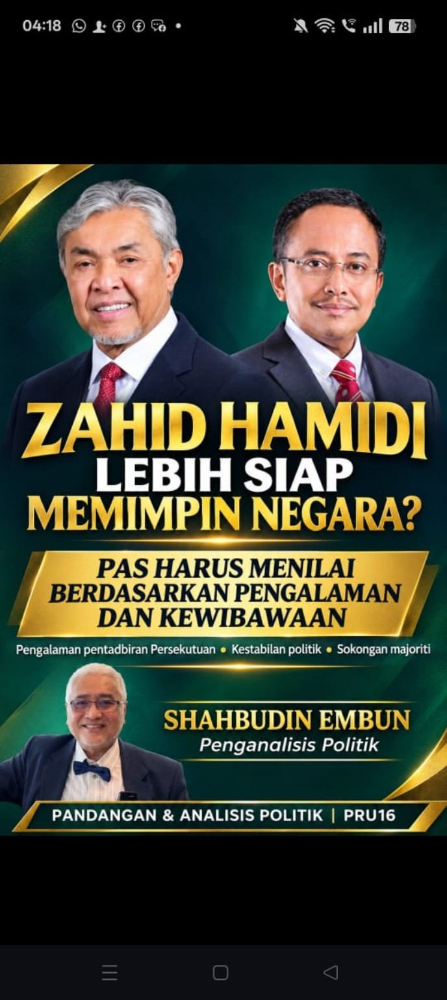

ZAHID HAMIDI LEBIH SIAP MEMIMPIN NEGARA: PAS HARUS MELIHAT KEPENTINGAN MALAYSIA, BUKAN TERPERANGKAP DALAM SENTIMEN POLITIK!
Mengapa pengalaman seorang Timbalan Perdana Menteri, bekas Menteri Pertahanan dan bekas Menteri Dalam Negeri mahu diketepikan? Malaysia memerlukan pemimpin yang sudah teruji, bukan sekadar mempunyai potensi politik.
Pengenalan
Perdebatan mengenai siapakah yang paling layak menjadi Perdana Menteri Malaysia ke-11 selepas PRU16 semakin menarik perhatian masyarakat politik tanah air.
Saya mengikuti pandangan Dato' Zaid Ibrahim dalam sebuah podcast yang begitu kritikal terhadap kemungkinan YAB Dato' Seri Dr. Ahmad Zahid Hamidi menjadi Perdana Menteri sekiranya YAB Dato' Seri Anwar Ibrahim tidak lagi memperoleh sokongan majoriti Ahli Parlimen selepas PRU16.
Sebaliknya, nama Menteri Besar Terengganu, YAB Dato' Seri Ir. Dr. Ahmad Samsuri Mokhtar, turut diketengahkan sebagai antara pilihan kepimpinan negara.
Saya menghormati hak Dato' Zaid Ibrahim untuk mempunyai pandangan politiknya sendiri. Namun, saya berpendapat bahawa menolak Zahid secara keterlaluan tanpa memberikan penilaian sewajarnya terhadap pengalaman dan rekod pentadbiran beliau merupakan satu pendekatan yang tidak adil.
Kita sedang membincangkan jawatan Perdana Menteri Malaysia, bukannya pertandingan populariti antara pemimpin parti.
Persoalan sebenar ialah: Siapakah yang paling bersedia, berpengalaman dan mempunyai kemampuan politik untuk mengemudi sebuah negara yang kompleks seperti Malaysia?
Pada hemat saya, Ahmad Zahid Hamidi mempunyai kelebihan pengalaman yang sangat signifikan dan wajar diberikan pertimbangan serius.
1. JANGAN SAMAKAN PENGALAMAN MENTADBIR NEGERI DENGAN PENGALAMAN MENTADBIR NEGARA
Saya tidak menafikan kewibawaan Menteri Besar Terengganu, Dato' Seri Ahmad Samsuri Mokhtar.
Beliau mempunyai latar belakang akademik yang baik dalam bidang kejuruteraan aeroangkasa, pengalaman sebagai ahli akademik dan pengalaman mengetuai kerajaan negeri Terengganu.
Semua pencapaian tersebut wajar dihormati.
Namun, menjadi Menteri Besar dan menjadi Perdana Menteri merupakan dua tanggungjawab yang berbeza dari segi skala, kompleksiti dan cabaran pentadbiran.
Perdana Menteri perlu mengurus keseluruhan jentera kerajaan Persekutuan, hubungan antarabangsa, keselamatan negara, ekonomi makro, pertahanan, kewangan, pelaburan asing serta hubungan antara negeri, termasuk kepentingan Sabah dan Sarawak.
Maka, persoalannya bukan sama ada Ahmad Samsuri seorang pemimpin yang bijak atau tidak.
Persoalannya ialah sama ada beliau telah mempunyai pengalaman dan rekod pentadbiran nasional yang setanding dengan seseorang yang sudah lama berada dalam kepimpinan tertinggi kerajaan Persekutuan.
Beliau mempunyai potensi, tetapi potensi tidak boleh disamakan dengan pengalaman mengurus keseluruhan pentadbiran negara.
Dalam soal kepimpinan nasional, pengalaman merupakan satu aset yang amat penting.
2. ZAHID HAMIDI BUKAN PEMIMPIN YANG BARU MENGENALI JENTERA KERAJAAN
- Rekod perkhidmatan beliau merangkumi:
- Timbalan Perdana Menteri Malaysia pada 2015–2018 dan sejak Disember 2022.
- Menteri Dalam Negeri pada 2013–2018.
- Menteri Pertahanan pada 2009–2013.
- Menteri di Jabatan Perdana Menteri pada 2008–2009.
- Menteri Kemajuan Desa dan Wilayah sejak 2022.
Di sinilah kelebihan Ahmad Zahid Hamidi perlu dinilai secara objektif.
Beliau bukan pemimpin yang hanya mempunyai pengalaman mengurus parti politik.
Presiden UMNO dan Pengerusi Barisan Nasional.
Ini merupakan pengalaman pentadbiran yang luas.
Beliau pernah menerajui Kementerian Dalam Negeri yang bertanggungjawab terhadap keselamatan dalam negeri, imigresen dan ketenteraman awam.
Beliau juga pernah mengetuai Kementerian Pertahanan yang mempunyai tanggungjawab besar terhadap kesiapsiagaan pertahanan negara.
Lebih penting, beliau pernah berada dalam kedudukan Timbalan Perdana Menteri dan memahami proses membuat keputusan pada peringkat tertinggi kerajaan Persekutuan.
Pengalaman seperti ini bukan sesuatu yang boleh diperoleh dalam tempoh beberapa bulan.
Sudah tentu Zahid bukan pemimpin yang sempurna. Rekod, dasar dan keputusan beliau boleh dinilai serta dipersoalkan secara terbuka.
Namun, adalah tidak adil untuk mengetepikan keseluruhan pengalaman pentadbiran beliau hanya kerana perbezaan sentimen politik.
Kelayakan seseorang pemimpin mesti dinilai berdasarkan keseluruhan rekod perkhidmatannya, bukan hanya berdasarkan persepsi atau ketidaksukaan politik.
3. PAS PERLU MELIHAT KEPENTINGAN NEGARA MELEBIHI KEPENTINGAN PARTI
Saya ingin mengemukakan satu persoalan kepada kepimpinan PAS.
Apakah matlamat sebenar PAS selepas PRU16?
Adakah matlamatnya semata-mata memastikan seorang pemimpin daripada PAS menjadi Perdana Menteri, ataupun memastikan Malaysia memperoleh seorang Perdana Menteri yang mampu membentuk kerajaan stabil dan mentadbir negara dengan berkesan?
Kedua-duanya tidak semestinya perkara yang sama.
PAS mempunyai kekuatan politik dan sokongan akar umbi yang tersendiri. UMNO pula mempunyai pengalaman panjang dalam pentadbiran Persekutuan, jaringan politik nasional dan keupayaan berunding dengan pelbagai kelompok masyarakat.
Mengapa perbezaan sejarah politik UMNO-PAS perlu terus menjadi penghalang kepada kerjasama yang lebih besar?
Jika Ahmad Zahid mempunyai sokongan majoriti Ahli Parlimen, pengalaman pentadbiran yang luas serta kemampuan membina persefahaman politik, mengapa PAS perlu menutup pintu untuk mempertimbangkan beliau?
Saya ingin menegaskan bahawa PAS tidak perlu mengorbankan prinsip perjuangannya untuk bekerjasama dengan UMNO.
Begitu juga UMNO tidak perlu mengorbankan identitinya.
Apa yang diperlukan ialah kematangan politik untuk mengutamakan kestabilan negara dan kepentingan rakyat.
Politik bukan sekadar soal siapa menang dan siapa kalah. Politik juga soal siapa yang mampu membentuk kerajaan dan mentadbir negara dengan berkesan.
4. DATO' ZAID IBRAHIM PERLU MENILAI KEMAMPUAN, BUKAN SEKADAR PERSONALITI
Saya menghormati Dato' Zaid Ibrahim sebagai seorang tokoh yang mempunyai pengalaman dalam bidang perundangan dan politik.
Namun, saya ingin mengingatkan bahawa perbahasan mengenai calon Perdana Menteri tidak sepatutnya dipengaruhi oleh sentimen peribadi atau persaingan politik semata-mata.
Jika Dato' Zaid berpendapat PAS perlu bergerak solo dan mempunyai kemampuan untuk memenangi lebih banyak kerusi Parlimen, itu adalah pandangan politik beliau.
Tetapi memenangi kerusi Parlimen dan membentuk kerajaan yang stabil merupakan dua perkara yang berbeza.
Sebuah kerajaan Persekutuan memerlukan kebijaksanaan berunding, kemampuan menyatukan pelbagai parti, pengurusan ekonomi, hubungan antarabangsa dan keupayaan menangani krisis.
Menang banyak kerusi belum semestinya menjamin seseorang parti mampu membentuk kerajaan yang stabil.
Begitu juga seseorang pemimpin yang popular belum semestinya mempunyai pengalaman mencukupi untuk mengendalikan seluruh pentadbiran negara.
Oleh itu, saya mencabar Dato' Zaid supaya memberikan penilaian yang lebih objektif terhadap pengalaman Zahid.
Janganlah kerana perbezaan politik dengan UMNO, segala pengalaman dan sumbangan beliau dalam pentadbiran negara diketepikan begitu sahaja.
5. PMX WAJAR DIHORMATI, ZAHID WAJAR DIPERTIMBANGKAN SEBAGAI PENGGANTI
Saya ingin menjelaskan bahawa cadangan meletakkan Zahid sebagai calon alternatif bukan bermaksud kita mahu menafikan sumbangan YAB Dato' Seri Anwar Ibrahim.
Sekiranya PMX masih mempunyai sokongan majoriti Ahli Parlimen selepas PRU16, kedudukan beliau hendaklah dihormati berdasarkan proses demokrasi dan Perlembagaan Persekutuan.
Namun, sekiranya berlaku perubahan politik dan beliau tidak lagi memperoleh sokongan majoriti, Malaysia perlu mempunyai pilihan kepimpinan yang berwibawa.
Dalam keadaan sedemikian, Ahmad Zahid Hamidi wajar dipertimbangkan dengan serius.
Beliau mempunyai pengalaman sebagai Timbalan Perdana Menteri, pengalaman mengetuai beberapa kementerian penting, pengalaman memimpin sebuah parti besar dan pengalaman mengurus hubungan politik dalam kerajaan campuran.
Ini menjadikan beliau antara calon alternatif yang mempunyai asas pengalaman pentadbiran Persekutuan yang kukuh.
Saya percaya Malaysia tidak boleh terus bergantung kepada percaturan politik jangka pendek.
Kita memerlukan kesinambungan pentadbiran, kestabilan politik dan kepimpinan yang mampu membawa negara ke tahap lebih tinggi.
6. KEPADA PAS: JANGAN TUTUP PINTU KERJASAMA DENGAN ZAHID
Saya ingin menyeru kepimpinan PAS supaya melihat persoalan ini dengan lebih terbuka.
UMNO dan PAS pernah bersaing. Kedua-duanya juga pernah bekerjasama dalam Muafakat Nasional dan pernah mempunyai pengalaman politik yang berbeza.
Namun, sejarah tidak sepatutnya menjadi penghalang kepada masa depan.
Jika Zahid mempunyai sokongan majoriti Ahli Parlimen, mempunyai kemampuan menyatukan parti-parti politik dan mempunyai pengalaman luas dalam pentadbiran Persekutuan, mengapa beliau tidak boleh diberikan peluang untuk dipertimbangkan?
Mengapa perlu menolak beliau lebih awal sebelum proses demokrasi memberikan jawapannya?
Saya tidak meminta PAS menyokong Zahid secara membuta tuli.
Saya hanya meminta supaya beliau dinilai secara adil berdasarkan pengalaman, keupayaan, integriti dan kemampuan membina kerajaan yang stabil.
Begitu juga Ahmad Samsuri. Beliau berhak dinilai berdasarkan pencapaian dan potensinya, tetapi tidak wajar diberikan kelebihan semata-mata kerana kedudukan politik atau parti yang diwakilinya.
Malaysia memerlukan pemimpin yang terbaik, bukan semata-mata pemimpin daripada parti yang kita sukai.
7. PERLEMBAGAAN MENJADI PENENTU, BUKAN SENTIMEN POLITIK
Akhirnya, kita perlu kembali kepada Perlembagaan Persekutuan.
Perkara 43(2)(a) memperuntukkan bahawa Perdana Menteri hendaklah seorang Ahli Dewan Rakyat yang pada hemat Yang di-Pertuan Agong berkemungkinan mendapat kepercayaan majoriti ahli Dewan Rakyat.
Ini bermakna jawatan Perdana Menteri bukan hak mutlak mana-mana parti politik.
Ia juga bukan hak eksklusif UMNO, PAS, PKR, DAP atau mana-mana gabungan.
Sokongan majoriti Dewan Rakyat merupakan asas penting dalam menentukan siapa yang layak membentuk kerajaan.
Maka, jika selepas PRU16 Zahid mempunyai sokongan majoriti dan diperkenankan oleh Yang di-Pertuan Agong mengikut Perlembagaan, beliau berhak dipertimbangkan untuk memegang amanah tersebut.
Inilah demokrasi berparlimen yang perlu kita hormati.
PENUTUP: MALAYSIA MEMERLUKAN PEMIMPIN YANG SUDAH TERUJI
Saya ingin menegaskan sekali lagi bahawa Ahmad Zahid Hamidi bukan satu-satunya nama yang boleh dibincangkan sebagai calon Perdana Menteri selepas PRU16.
Namun, beliau merupakan seorang pemimpin yang mempunyai pengalaman pentadbiran Persekutuan yang tidak boleh dipandang ringan.
Ahmad Samsuri mempunyai kelebihan dan potensi tersendiri. Tetapi potensi masa depan tidak boleh disamakan dengan pengalaman mengendalikan keseluruhan pentadbiran negara.
Kita tidak perlu menolak sesiapa. Kita hanya mahu setiap calon dinilai berdasarkan kemampuan sebenar.
Kepada Dato' Zaid Ibrahim, saya menghormati kebebasan beliau untuk mengemukakan pandangan. Namun, saya berharap penilaian terhadap Zahid dibuat berdasarkan rekod dan pengalaman, bukan semata-mata sentimen politik.
Kepada PAS pula, saya menyeru agar membuka ruang pertimbangan yang lebih rasional dan matang.
Jangan menutup pintu kerjasama dengan UMNO dan Zahid hanya kerana persaingan politik masa lalu.
Sekiranya PMX masih mendapat mandat majoriti, hormatilah mandat tersebut. Tetapi jika berlaku perubahan sokongan selepas PRU16, Ahmad Zahid Hamidi wajar berada dalam senarai utama calon yang dipertimbangkan.
Malaysia tidak memerlukan Perdana Menteri yang hanya hebat dalam percaturan politik.
Malaysia memerlukan seorang pemimpin yang memahami selok-belok pentadbiran negara, mampu menyatukan rakyat, mempunyai pengalaman mengemudi kerajaan dan berupaya membawa negara menghadapi cabaran masa depan.
BUKAN SOAL SIAPA PALING POPULAR, TETAPI SIAPA PALING BERSEDIA MEMIMPIN MALAYSIA!
ZAHID HAMIDI: CALON BERWIBAWA, BERPENGALAMAN DAN WAJAR DIBERI PELUANG UNTUK DINILAI SEBAGAI PERDANA MENTERI MALAYSIA KE-11.
← Kembali ke halaman utama Nanis Communication